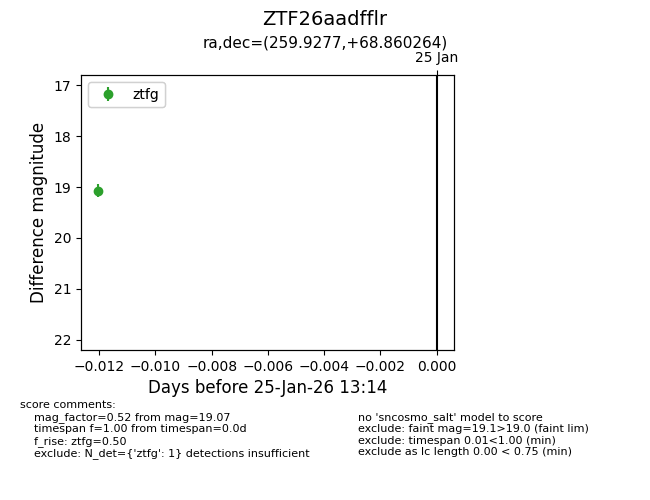
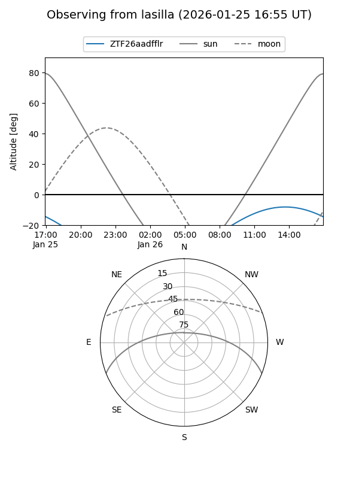
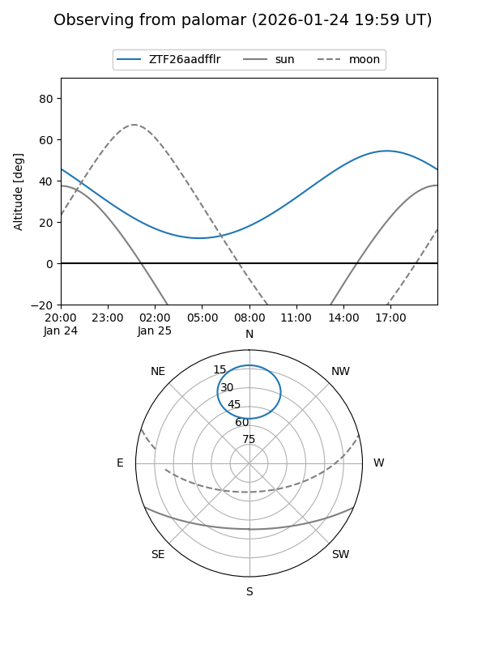

ZTF26aadfflr
Target ZTF26aadfflr at 2026-01-25 13:16
Aliases and brokers:
FINK: link
Lasair: link
ALeRCE: link
alt names
ZTF26aadfflr (ztf,fink_ztf)
Coordinates:
equatorial (ra, dec) = 259.9277,+68.86026
equatorial (HMS+DMS) = 17:19:42.65,+68:51:36.95
galactic (l, b) = (99.4907,+33.39160)
Flags:
Photometry:
last ztfg=19.07
1 ztfg detections
Lightcurve

Visibility


Additional plots